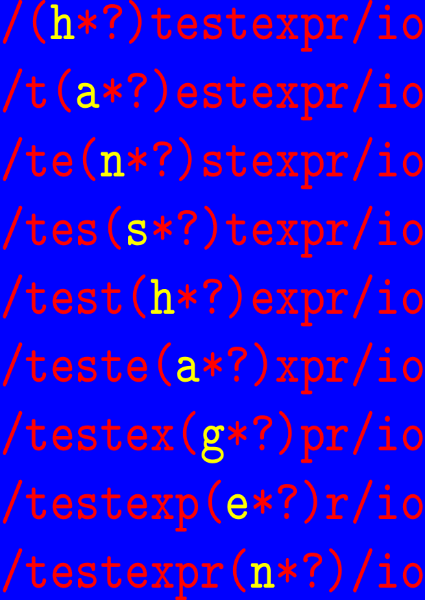
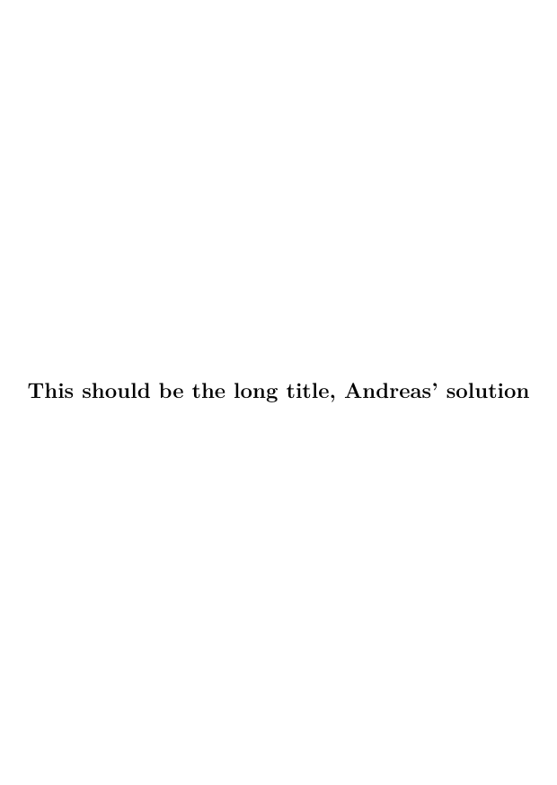
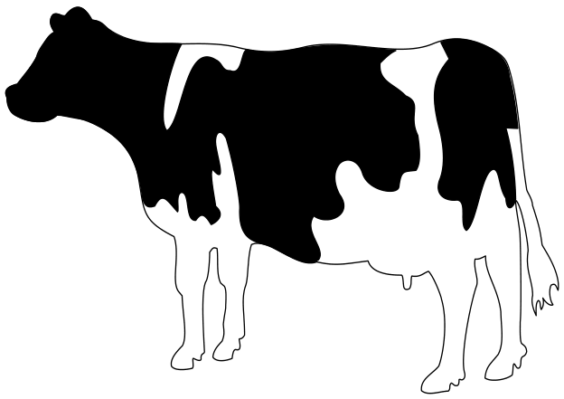
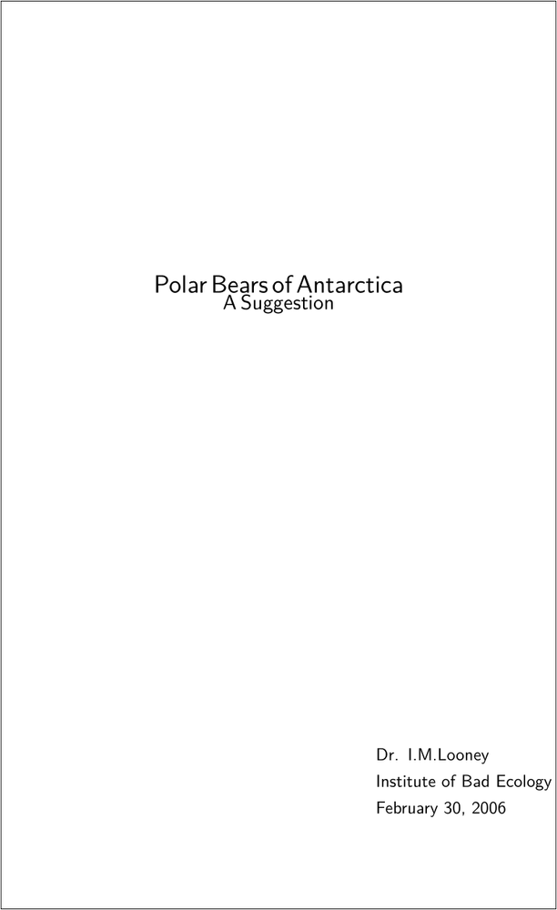

Contents
- 1 First one
- 2 Another title page
- 3 A simple centered cover for a booklet
- 4 Scaled Full Page Image 1
- 5 Scaled Full Page Image 2
- 6 A very very simple one
- 7 Simple example with MetaFun (2019)
- 8 Poster 01 - proposal for Libre Planet 2021
- 9 Empty or Transparent letters
- 10 Background tricks without MetaPost
- 11 Links
First one
-
\setuppapersize[A6] \setupcolors[state=start] \startuseMPgraphic{cover} StartPage ; fill Page withcolor .5green ; path p ; p := unitcircle randomized .1 xsized(PaperWidth-1cm) ; fill p shifted -center p shifted center Page withcolor red ; StopPage ; \stopuseMPgraphic \defineoverlay[cover][\useMPgraphic{cover}] \starttext \setupbackgrounds[page][background=cover] \startstandardmakeup \raggedcenter \vfill \definedfont[SerifBold at 28pt]\setstrut \strut Penguins in Vietnam \blank[2*big] \definedfont[SerifBold at 18pt]\setstrut \strut A Very Short Story \vfill \stopstandardmakeup \setupbackgrounds[page][background=] \input tufte \stoptext
Another title page
-
\setuppapersize[A6] \definetype[ytyp][color=yellow] \startbuffer[title] \type{/(}\ytyp{h}\type{*?)testexpr/io}\par \type{/t(}\ytyp{a}\type{*?)estexpr/io}\par \type{/te(}\ytyp{n}\type{*?)stexpr/io}\par \type{/tes(}\ytyp{s}\type{*?)texpr/io}\par \type{/test(}\ytyp{h}\type{*?)expr/io}\par \type{/teste(}\ytyp{a}\type{*?)xpr/io}\par \type{/testex(}\ytyp{g}\type{*?)pr/io}\par \type{/testexp(}\ytyp{e}\type{*?)r/io}\par \type{/testexpr(}\ytyp{n}\type{*?)/io}\par \stopbuffer \setupcolors[state=start] \definelayer [TitleGraphic] [width=\paperwidth, height=\paperheight] \setlayer [TitleGraphic] [preset=lefttop] {\scale [width=\paperwidth, height=\paperheight] {\framed [frame=off, offset=overlay, background=color, backgroundcolor=blue, foregroundcolor=red, align=normal] % {\setuptyping[before=,after=]\typebuffer[title]}}} {\getbuffer[title]}}} \setupbackgrounds[page][background=TitleGraphic] \starttext \startstandardmakeup \stopstandardmakeup \stoptext
- 
Guess who did this one :-) Reference to mailing list
A simple centered cover for a booklet
-
\setuppapersize[A6] \setuppagenumbering[alternative=doublesided] \starttext \startpagemakeup[align=center,doublesided=no,% pagestate=start]% we want to number this {\bfb This should be the long title, Andreas' solution\par} \stoppagemakeup This is the colofon \chapter{Start} \input knuth \stoptext
- 
Reference: http://www.ntg.nl/pipermail/ntg-context/2011/063030.html
Or, another solution (which can be tuned at will), which relies on a new feature in MkIV: there is also a layout with the same name as the makeup environment and you can control the margins of your new title page environment with \setuplayout[makeupname][...].
\setuppagenumbering[alternative=doublesided] %\showframe \setuppapersize[A5][A4,landscape] \setuparranging[2UP] \definemakeup[titlepage][pagestate=start,doublesided=no] \setuplayout[titlepage] [backspace=2cm,width=108mm] % 148mm is the width, 20 mm of backspace, % 20 mm of outer margin \starttext \starttitlepagemakeup \raggedcenter \bfc This should be the long, long, very long title\par \stoptitlepagemakeup This is the colofon \chapter{Start here on page 3} \dorecurse{20}{\input tufte\par} \stoptext
Scaled Full Page Image 1
An elegant option is to extend the makeup mechanism to accept the background key:
\unprotect
\appendtoks
\setupbackgrounds[\v!page][\c!background=\makeupparameter\c!background]
\to \t_page_makeup_every_setup
\protect
Then you can use
\setupexternalfigures[location={local,default,global}]
\defineoverlay
[backgroundimage]
[{\externalfigure[cow.pdf][width=\overlaywidth, height=\overlayheight]}]
\starttext
\startstandardmakeup[background=backgroundimage]
Whatever
\stopstandardmakeup
Next
\stoptext
Scaled Full Page Image 2
Another way to use a full-page image includes:
-
\setuppapersize[A7,landscape] \startTEXpage \externalfigure [cow.pdf] [width=\paperwidth, height=\paperheight] \stopTEXpage
- 
A very very simple one
If you are looking for something fancy with graphics, bells, and whistles, this is not for you. However, if you are looking for a very simple cover page with simple code, then read on.
Very often a white paper or some other document needs a cover page. The cover page needs to have a specific (and special) layout, so some layout commands are required. The textual content is limited, and in many cases there is no graphics whatsoever. The cover page below is really plain vanilla:
% --- Cover page \dontleavehmode \blank[6cm] \startalignment[center] \ssd Polar Bears of Antarctica \par \ssc A Suggestion \stopalignment \blank[10cm] \startalignment[flushright] \dontleavehmode \ssb \bTABLE \setupTABLE[r][each][frame=off] \bTR \bTD Dr. I.M.Looney \eTD \eTR \bTR \bTD Institute of Bad Ecology \eTD \eTR \bTR \bTD February 30, 2006 \eTD \eTR \eTABLE \stopalignment \page
- 
Analysis of the code
These two commands together make a 6-centimeter blank on the top of the page:
\dontleavehmode \blank[6cm]
The \dontleavehmode in the beginning is a bit of TeX-magic. TeX has a horizontal and a vertical mode, and if it is in the vertical mode when it encounters a \blank, no blank will appear. The \dontleavehmode forces the right mode.
The title is centered. The actual layout may need some tweaking with e.g. \blank. This one looks reasonably fine on the paper (and bad in the Wiki).
\startalignment[center] \ssd Polar Bears of Antarctica \par \ssc A Suggestion \stopalignment
Another measured waste of paper (this time no mode problems):
\blank[10cm]
And then the rest of the information is embedded in a natural |Natural tables with TABLE. All the text in the TABLE is left-aligned, but the TABLE itself is right-aligned. So, the longest row dictates the position of the TABLE. The downside of this approach is that if you have a number of cover pages with different authors, the starting position jumps around.
\startalignment[flushright] \dontleavehmode \ssb \bTABLE \setupTABLE[r][each][frame=off] \bTR \bTD Dr. I.M.Looney \eTD \eTR \bTR \bTD Institute of Bad Ecology \eTD \eTR \bTR \bTD February 30, 2006 \eTD \eTR \eTABLE \stopalignment
N.B.: the \startalignment requires the \dontleavehmode if there is no text immediately after the start command.
And finally, let's finish the page:
\page
And that's it, a very simple cover page. While it may be useful as such, it has several shortcomings. For example, the positions are not absolute, so a change in the title may move the information block in the lower right corner. Using the TABLE is just a show-off. If you do not need the "align-by-rightmost" alignment, \startnarrower[..][..] ... \stopnarrower provides much the same functionality with fewer commands and cleaner code.
Simple example with MetaFun (2019)
-
\setuppapersize[A6] \setupbodyfont [palatino] \definecolor [Top] [h=a5b291] \definecolor [Bottom] [h=b7c1a7] \definecolor [TitleColor] [h=96433a] \define[1]\titlefont{% \setcharacterkerning[extrakerning]% \cap \definedfont[#1]% \ignorespaces } \starttext \startMPpage StartPage ; numeric w ; w := bbwidth(Page) ; numeric h ; h := bbheight(Page) ; fill (unitsquare xyscaled (w,.8h)) withcolor \MPcolor{Bottom} ; fill (unitsquare xyscaled (w,.2h) yshifted .8h) withcolor \MPcolor{Top} ; draw (0,.8h) -- (w,.8h) withpen pensquare scaled 2pt withcolor white ; draw textext.rt("\definedfont[Serif at 10pt]Author") shifted (.1w,.95h) ; draw textext.rt("\titlefont{Serif at 20pt} Cover Page Title") shifted (.1w,.85h) withcolor \MPcolor{TitleColor} ; draw textext.rt("\titlefont{SerifBold at 10pt} Subhead Title") shifted (.1w,.75h) withcolor \MPcolor{TitleColor} ; draw textext.rt("\titlefont{SerifBold at 10pt} Another subhead") shifted (.1w,.70h) ; % picture p; p := externalfigure "matterhorn.png" ; % draw p scaled (w/bbwidth p) ; StopPage ; \stopMPpage \stoptext
-

Poster 01 - proposal for Libre Planet 2021
- Source code
- Preview
{kind=link}
Empty or Transparent letters
This one requires LMTX.
-
\definecolor [ColorHighA] [h=c4a000] \definecolor [ColorHighB] [h=602217] \definecolor [ColorLow] [0.8(white)] \startMPpage picture tt ; tt := lmt_outline [ kind = "fillup", text = "\definedfont[name:texgyrepagellabold*default]% \framed[frame=off,offset=3mm,align=middle,strut=none] {MetaPost\\is Fun !\\Aujourd'hui\\Today\\*§ 2020 §*}", ] xsized 12cm ; path bb ; bb := (boundingbox tt) && cycle ; path pp ; pp := bb enlarged 2cm ; fill pp withshademethod "linear" withshadedirection (2.,0.) withshadecolors (\MPcolor{ColorHighA}, \MPcolor{ColorHighB}) ; for i within tt : nofill pathpart i; endfor ; eofill bb withcolor "gray"; \stopMPpage
Background tricks without MetaPost
{kind=link}
The background structure is a photo (moiree effects in a microphone filter, JPEG), the left bar is made with a design program (Affinity Designer, PDF) and doesn’t include the structure, everything put together using Transparency.
The image above is not a photo of the printed cover but just a JPEG export of the PDF; i.e. even if the cover paper is new and smooth, it looks structured and a bit faded.
\definefont[SubtitleFont][Sans*normnum at 14pt] \definefont[SubjectFont][Chalkduster*default at 41pt] \setupcolors[ pagecolormodel=auto, rgb=no,cmyk=yes,spot=no, overprint=yes, intent={Uncoated FOGRA29 (ISO 12647-2:2004)}, textcolor=cmykblack,] \definecolor[cmykblack][c=0,m=0,y=0,k=1] \definecolor[SubjectColor][c=0,m=.1,y=.2,k=.3,a=2,t=1] \definetransparency[tmultiply][a=2,t=1] % multiply \definetransparency[tmoiree][a=1,t=.05] % normal, but very light \definetransparency[tsidebar][a=2,t=.5] % multiply, light \definemeasure[Bleed][3mm] \definemeasure[maxWidth][\paperwidth + 1\measure{Bleed}] \definemeasure[maxHeight][\paperheight + 2\measure{Bleed}] \definemeasure[topOffset][\topspace + \measure{Bleed}] \definelayer[background][ x=0mm,y=-\measure{Bleed}, width=\measure{maxWidth}, height=\measure{maxHeight}] % incl. bleed \setupbackgrounds[page][background={background},state=start] % background structure (moiree) \setlayer[background][ hoffset=-\measure{Bleed}, voffset=-\measure{Bleed}, ]{\starttransparent[tmoiree]% \externalfigure[ka37/img/Moiree][height=216mm,orientation=90]% \stoptransparent} % sidebar \setlayer[background][ hoffset=0mm, voffset=-\measure{Bleed}, ]{\starttransparent[tsidebar]% \externalfigure[ka37/img/Sidebar_KA][height=303mm]% \stoptransparent} % Motto \setlayerframed[background][ hoffset=45mm, voffset=20mm, offset=overlay, frame=off, align=flushleft, ]{\SubtitleFont% Kritische Ausgabe\crlf\vskip4pt% Zeitschrift für Literatur im Dialog} % Issue No. \setlayerframed[background][ hoffset=160mm, voffset=20mm, width=28mm, align=flushright, offset=overlay, frame=off, ]{\definedfont[Sans*normnum at 36pt]37/38} %37 % Image \setlayerframed[background][ hoffset=45mm, voffset=148mm, width=168mm, offset=overlay, frame=off, ]{\starttransparent[tmultiply]% \clip[x=2mm,y=0mm,width=168mm,height=107mm]{% clip to target size \externalfigure[ka37/img/Cover][width=168mm]}% \stoptransparent } % Subject \setlayer[background][ hoffset=45mm, voffset=131mm, ]{\SubjectFont\WORD{\color[SubjectColor]{Werkgespräche}}} \strut\page